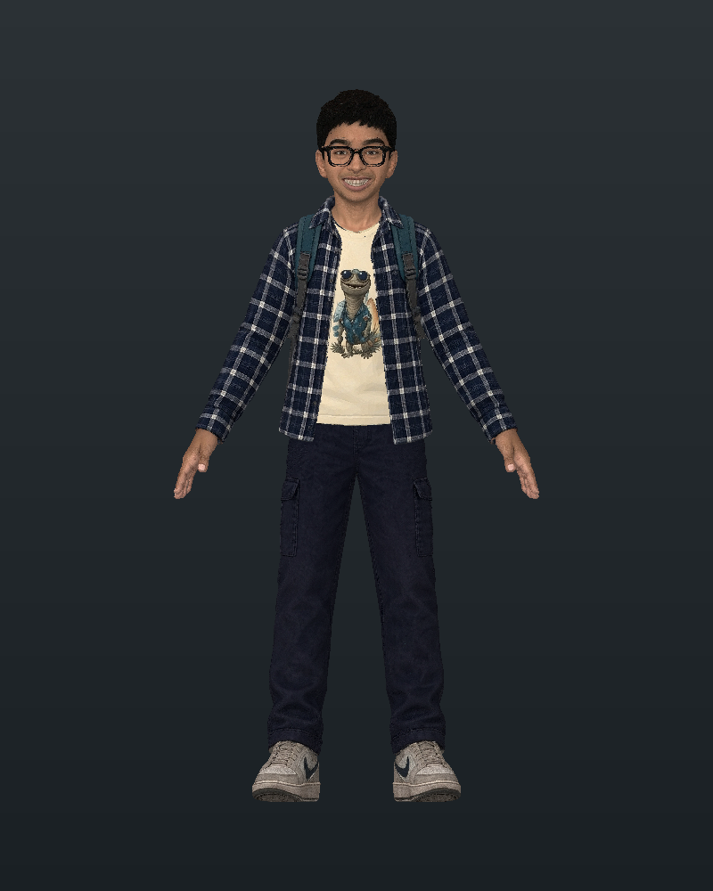

A concept that fits.
Choose a form of play that suits the audience and the brand. A short challenge, a personalized character, or a repeatable game run should have a reason to exist.
Berlin Combat / Embedded storytelling
Personalized games are becoming easier to create. The opportunity is to choose a concept that belongs to your brand, fits your core experience, and tells a coherent story through play.
01 / Industry trends
Claude Fable 5.1 and GPT-6 Astra expand what AI can contribute to coding and iteration. Anthropic describes Fable 5.1’s ability to handle substantial coding projects; OpenAI’s Playco case study shows Astra being used in a game-prototyping workflow.
Industry context: Claude Fable 5.1 — Anthropic · Game prototyping with Astra — OpenAI
Our view: as the effort of building falls, a clear creative direction becomes more valuable. A focused brief and a repeatable build-and-test process can put a playable concept within reach in days. Scope, assets, and the level of polish still shape what is possible.
02 / What matters & why
The first decision is what the player should feel, understand, or do. That gives the game a purpose within the experience—and gives every subsequent design choice something to serve.
Choose a form of play that suits the audience and the brand. A short challenge, a personalized character, or a repeatable game run should have a reason to exist.
Characters, rules, rewards, visual style, and tone should express the same idea. The story needs to remain recognizable through every interaction.
Identify where play belongs in the core experience: discovering an idea, learning a product, celebrating a milestone, or returning for another challenge.
03 / Embedded storytelling
Embedded storytelling puts meaning into the choices, mechanics, and feedback. What a player can do—and what happens as a result—becomes part of the narrative.
For a brand, that means starting with the experience you want to create, then designing the game around it. Personalization can make a character or a game run feel relevant, while a consistent world and clear rules keep the overall story together.
04 / What needs to be done
Specify the audience, purpose, narrative arc, game style, and the moment where it appears. Decide what success would look like for the player and the business.
Bring character assets, controls, animation, sound, and deployment into a repeatable process. A clear specification gives the tools a consistent target.
Build one complete loop first. Check whether players understand it, enjoy it, and take away the intended idea before adding more content or complexity.
05 / The exploration

A browser-based arcade fighter exploring personalized characters, expressive moves, and immediate feedback. The concept pairs Rishan and Hanaya in a player-versus-bot encounter. Character introductions, signature attacks, and sound establish the world around a simple combat loop.
This is a working exploration of the approach. Its value is in making the design tangible enough to play, question, and refine.
06 / How we see it evolving
The next step is to test the narrative as carefully as the mechanics. Do players understand the premise? Does the character feel meaningful? Does the interaction support the experience around it?
From there, explore brand-specific worlds, personalized game runs, and reusable styles that retain a consistent identity. Let playtesting guide what grows: more expressive characters, a stronger story arc, or a better connection to the wider product.